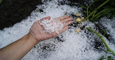
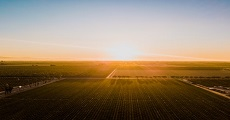

Ndryshimet atmosferike:

- Vushtrria njihet si qytet qe nuk ka bresher.
- Sasia e reshjeve atmosferike ne territorin e Vushtrrise eshte 670-810 mm. Prej ererave me se shpeshti eshte era frontale nga Veri-Lindja me 20.3% ndersa ere ka me pak ne Lindje te qytetit.

- Temperatura e ajrit eshte e ndryshueshme, ku vlera mesatare vjetore eshte 10.2 shkalle celsius.
- Amplituda vjetore e temperatures se ajrit eshte 21.9 shkalle celsius, ku me vlerat ekstreme dhe me elemente tjera krijojne klimen e regjimit kalimtar ne mes te klimes mesatare kontinentale, kur vjeshta eshte me e nxehte se pranvera per 1.5 shkalle celsius.